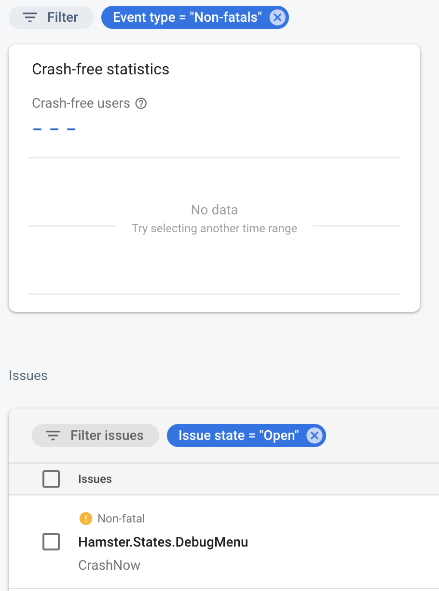
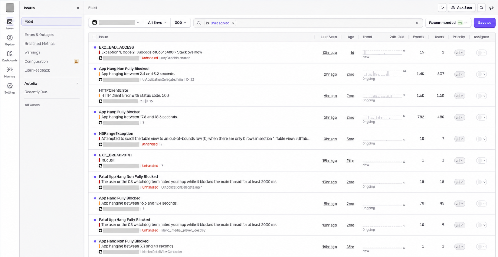
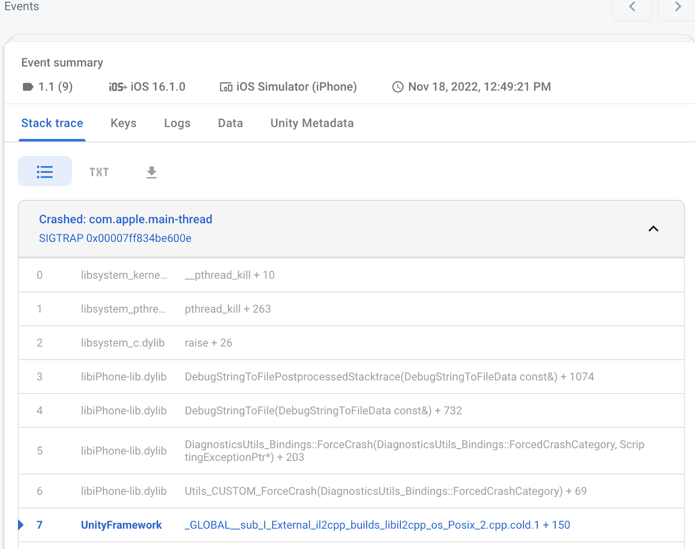
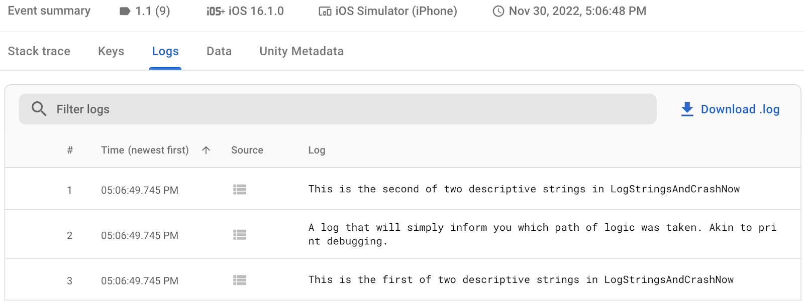

Sentry vs Firebase Crashlytics for Mobile Apps
Short answer
Sentry and Firebase Crashlytics are both free to start, but the right default depends on scope. Choose Crashlytics for a mobile-only app already using Firebase: Crashlytics is a no-cost product. Choose Sentry when you want one issue workflow across mobile, backend, and web, or expect to outgrow crash reporting.
For a solo launch, do not install both by default. Pick one owner for crashes, upload the symbols for every release, and make sure a test crash reaches the dashboard before the first external build.
Two-column comparison of Sentry and Firebase Crashlytics, showing Sentry spanning mobile, backend, and web while Crashlytics focuses on mobile crashes inside the Firebase console.
/content-visuals/articles/sentry-vs-crashlytics-comparison.svg


How much do Sentry and Firebase Crashlytics cost in 2026?
At solo scale, both have a $0 path. The difference appears when volume, collaborators, and monitoring scope grow.
| Option | Current price | What matters to a solo mobile developer |
|---|---|---|
| Sentry Developer | $0 | 1 user, 5,000 errors a month, 5 million spans, 50 replays, 5 GB of logs, and 5 GB of application metrics |
| Sentry Team | $26 a month on the annual pricing view ($312 a year) | Unlimited users, 50,000 included errors, API and third-party integrations, and paid overage options |
| Firebase Crashlytics | No cost on Spark and Blaze | Crash reporting remains a no-cost Firebase product; product limits still apply, and other Firebase or Google Cloud services can bill separately |
Prices and quotas last checked Aug 11, 2026, against Sentry pricing and the official Firebase pricing plans. Recheck both before committing spend.
This changes the usual framing. Crashlytics does not win simply because it is free; Sentry is free for one user too. Crashlytics wins on cost when you need mobile crash reporting and nothing broader. Sentry's paid boundary arrives when you need more volume, another user, or features beyond the Developer plan.
What is the practical difference between Sentry and Crashlytics?
Crashlytics is a focused mobile crash reporter inside Firebase. Sentry is a broader error-monitoring workflow that can follow an issue beyond the mobile app.
| Decision | Sentry | Firebase Crashlytics |
|---|---|---|
| Center of gravity | Errors across mobile, backend, and web | Mobile crashes and non-fatal events inside Firebase |
| Official mobile paths | Apple, Android, React Native, Flutter, and more | Apple, Android, Flutter, and Unity |
| Context beyond a crash | Releases, traces, logs, tags, replays, and related issues | Logs, custom keys, non-fatals, breadcrumb logs, issue variants, and impact |
| Team model at $0 | 1 user | Not priced per Crashlytics seat |
| Ecosystem fit | Separate monitoring vendor that can span services | Strongest when Firebase already owns part of the app stack |
| Main watch-out | Quotas, event volume, sampling, and alert noise need deliberate setup | Automatic breadcrumb logs require Google Analytics; adding Firebase only for Crashlytics may be unnecessary coupling |
Both tools group events into issues, accept non-fatal reports, and need readable symbols. The choice is not whether either can report a crash. It is where you want the investigation to continue after the crash appears.
When should you choose Sentry?
Choose Sentry when the error can cross an app boundary.
A mobile checkout might fail because the app threw an exception, the API returned an error, or a backend job timed out. If those surfaces all report into Sentry, one issue workflow can carry release, trace, tag, and related-event context across them. That is more useful than a second mobile-only dashboard when the bug is not mobile-only.
Sentry is also the cleaner fit when:
- the app has a backend or web surface you want to monitor in the same system;
- React Native is a first-class requirement;
- you want release health, traces, logs, or replay context beside errors;
- you do not otherwise use Firebase and want crash reporting to remain a separate responsibility; or
- one developer can stay inside the free Developer plan.
The pricing decision is simple at first: start on Developer, watch the accepted-error quota, and move only when a real limit appears. Do not buy Team pre-emptively for a one-person app.
When should you not use Sentry?
Do not choose Sentry because the feature list is longer. More telemetry creates more decisions: which events to accept, what to sample, which data to scrub, how to name releases and environments, and which alerts deserve attention.
Skip Sentry when:
- the app is mobile-only, Firebase is already installed, and crash reporting is the entire requirement;
- a second monitoring console would split attention without adding useful context;
- the 5,000-error Developer quota is likely to be noisy because the app emits the same handled error repeatedly; or
- nobody will maintain release naming, symbol uploads, alert rules, and data-scrubbing settings.
Sentry can be the broader tool and still be the wrong fit. A solo stack stays durable when every tool owns one job you actually need.
When should you choose Firebase Crashlytics?
Choose Firebase Crashlytics when Firebase already sits in the app and the job is clear: catch mobile crashes, group them, show impact, and attach enough context to reproduce the failure.
Google's current Crashlytics docs list Apple, Android, Flutter, and Unity setup paths. Reports can include fatal crashes, non-fatal exceptions, custom keys, custom logs, and breadcrumb context. The dashboard groups related events into issues and variants, then highlights severity and prevalence so you can work on the failures affecting more people.

Crashlytics is the practical fit when:
- the app already uses Firebase Analytics, Remote Config, Cloud Messaging, or another Firebase service;
- mobile is the only runtime you need to monitor;
- the priority is no-cost crash reporting rather than broader observability;
- Flutter or Unity is the main client platform; or
- you want crash reporting beside the Firebase release and product-operations tools you already open.
The no-cost label is real, but keep it precise. Firebase lists Crashlytics as a no-cost product on both Spark and Blaze. Other Firebase and Google Cloud products can still create charges, so “Crashlytics is free” does not mean “the whole Firebase project can never bill.”

When should you not use Firebase Crashlytics?
Do not add Firebase only because Crashlytics costs $0 if the rest of the stack deliberately avoids Firebase. You still create a Firebase project, add configuration to the app, maintain its SDK, and accept another operational surface.
Skip Crashlytics when:
- you need one investigation path across mobile, backend, API, and web errors;
- React Native support must come directly from the product's official platform path;
- you want tracing, logs, or replay context in the same monitoring product rather than through adjacent Google services; or
- enabling Google Analytics for automatic breadcrumb logs conflicts with the app's telemetry plan.
Crashlytics works without turning the entire app into a Firebase stack. The narrower warning is about intent: do not add a platform dependency for one free feature unless that feature is worth owning.
Which is easier to set up before launch?
If Firebase is already configured, Crashlytics is usually the shorter path. Add the SDK, add the platform build step, force a test crash, and confirm the report arrives. On Apple platforms, the official setup uses Swift Package Manager and a build-phase script for dSYM upload.
Sentry's SDK setup is also direct, but the useful setup is larger than installing a package. Decide project boundaries, name releases and environments, upload symbols or source maps, scrub sensitive data, and create only the alerts someone will act on.
For either tool, setup is not complete until the dashboard shows a symbolicated test crash from a release build. An SDK that compiles but produces an unreadable stack trace is not crash reporting yet.
The step-by-step path lives in the crash reporting setup guide.
Sentry vs Firebase Crashlytics: which should a solo developer pick?
Pick Crashlytics when the app already uses Firebase and you need a calm, no-cost mobile crash dashboard. Pick Sentry when the monitored surface extends beyond the app, or when release, trace, log, and related-issue context belong in the same workflow.
If both still look equal, use this tiebreaker:
- Mobile-only and Firebase already installed: Crashlytics.
- Mobile plus backend or web: Sentry.
- One developer and uncertain future scope: Sentry Developer is a reasonable $0 start.
- No Firebase today and no broader monitoring need: compare the operational dependency, not just the invoice.
Whichever you choose, install one before the first external build. Crash reports cannot explain the failure that happened before monitoring existed.
Frequently asked questions
Is Sentry free for a solo developer?
Yes, within current limits. Sentry's Developer plan is $0 for 1 user and includes 5,000 errors a month, 5 million spans, 50 replays, 5 GB of logs, and 5 GB of application metrics (checked Aug 11, 2026). Move to Team when a real quota, collaboration, or integration requirement appears.
Is Firebase Crashlytics really free?
Firebase lists Crashlytics as a no-cost product on both the Spark and Blaze plans. Product limits still apply, and adjacent Firebase or Google Cloud services can have their own quotas and charges. Check the current Firebase pricing page before assuming the whole project is cost-free.
Can I use Sentry and Crashlytics together?
Technically, yes. For a solo app, do not run both without a specific reason, such as a short migration or a proven gap one tool fills. Duplicate crash SDKs create two dashboards, two alert streams, and two data-handling configurations while reporting many of the same failures.
Does Crashlytics require Google Analytics?
Crash reporting does not require Google Analytics, but Firebase's official setup says automatic breadcrumb logs do. If you want the user-action trail before a crash, include Analytics in the telemetry and consent decision rather than enabling it by accident.
Source checks
Product and pricing claims were checked against official sources on Aug 11, 2026:
- Sentry pricing
- Sentry iOS SDK documentation
- Sentry issue details documentation
- Firebase Crashlytics documentation
- Firebase Crashlytics Apple setup
- Firebase Crashlytics report customization
- Firebase Crashlytics Unity codelab — interface screenshots, CC BY 4.0
- Firebase pricing plans
No hands-on testing claim is made. Prices, quotas, and product capabilities can change; verify them again before publishing a later revision.
Explore the crash-reporting category to compare the rest of the decision area.
Last checked: Aug 11, 2026.